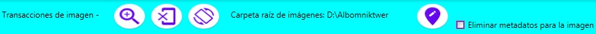

El programa "Comentarios sobre la imagen." está diseñado para guardar metadatos en la imagen. El archivo que contiene metadatos debe tener el formato: jpg, jpeg, bmp, gif, png, tif. Un archivo puede contener varios metadatos que deben pertenecer a diferentes usuarios. Los metadatos contienen la ruta donde se ubicará el archivo para el usuario seleccionado.
El programa tiene los siguientes modos de operación:
- certificado del programa;
- el modo de seleccionar y mover archivos con metadatos;
- ingresar, guardar y eliminar metadatos del archivo seleccionado. Para cambiar a este modo, debe seleccionar una imagen y hacer doble clic con el mouse o seleccionar el comando de menú "Cambiar posición (metadatos)".
Menú de modo - seleccionar y mover archivos
Comandos de menú (de izquierda a derecha):
- información sobre el autor;
- Selecciona la carpeta que contiene la imagen.
- escala de visualización de la imagen en miniatura
- imagen en movimiento a través de metadatos;
(El movimiento de la imagen seleccionada se realiza mediante el comando del menú contextual)
- Modo "Ayuda sobre el programa".
Menú de modo: ingresar, guardar y eliminar metadatos

Comandos de menú (de izquierda a derecha):
- Incremento en la imagen (escala del 200%);
- Visualización de la imagen original.
- girar la imagen hacia la derecha;
- escribir metadatos a la imagen;
- Eliminación de metadatos en la imagen..